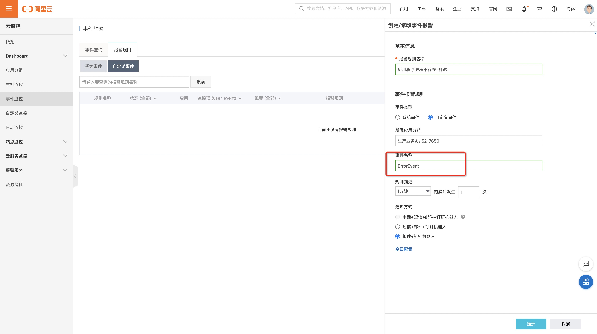
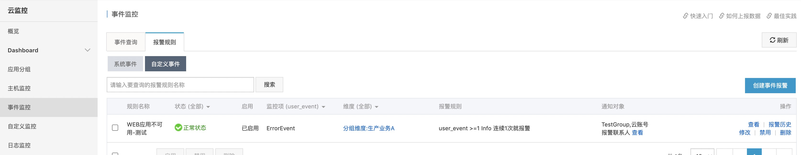

功能概览
本文编写时，阿里云的该功能更新时间：2020-07-01 17:59:01
事件监控功能为您提供上报自定义事件的接口，方便您将业务产生的异常事件采集上报到云监控，通过对上报的事件配置报警规则来接收报警通知。
使用限制
- 单个阿里云账号的QPS限制为20。
- 单次最多上报100个事件。
- 单次最多上报500KB数据。
上报方式
云监控为您提供的自定义事件监控数据的上报方式如下：
|
授权
云监控支持使用阿里云账号或RAM用户上报事件监控数据。当RAM用户使用AccessKey上报监控数据时，需要授权云监控的管理权限。操作方法如下：
使用阿里云账号登录RAM控制台。
创建RAM用户。
操作方法请参见创建RAM用户。
为RAM用户创建访问密钥。
操作方法请参见为RAM用户创建访问密钥。
为RAM用户授权（AliyunCloudMonitorFullAccess）。
操作方法请参见为RAM用户授权。
阿里云命令行工具
安装和配置阿里云命令行（CLI）工具，操作方法请参见阿里云CLI。
wget https://aliyuncli.alicdn.com/aliyun-cli-linux-latest-amd64.tgz?spm=a2c4g.11186623.2.12.35cc7dbf1kFtRY&file=aliyun-cli-linux-latest-amd64.tgz
tar xf aliyun-cli-linux-latest-amd64.tgz?spm=a2c4g.11186623.2.12.35cc7dbf1kFtRY
cp aliyun /usr/local/bin
|
上报监控数据
使用PutCustomEvent接口上报事件监控数据，请参见PutCustomEvent。
示例如下：
aliyun --region cn-shanghai --access-key-``id` `xxx --access-key-secret xxx cms PutCustomEvent --EventInfo.1.EventName ErrorEvent --EventInfo.1.Content helloworld --EventInfo.1.Time ``"20171013T170923.456+0800"` `--EventInfo.1.GroupId 0
|
命令参数详解
| 参数 |
解释 |
| 参数 |
解释 |
--region |
地域 |
--access-key-id |
AccessKey ID |
--access-key-secret |
AccessKey Secret |
cms |
CMS 云监控 |
PutCustomEvent |
上传自定义事件 |
--EventInfo.1.EventName |
事件名称 |
--EventInfo.1.Content |
事件描述 |
--EventInfo.1.Time |
事件发生的时间 |
--EventInfo.1.GroupId |
事件所在应用分组ID |
特别注意：
1. accesskey和secretkey用于身份识别，一定注意RAM的权限是否已经授予了AliyunCloudMonitorFullAccess权限；为了更安全，此处可以改为使用 RAM role。
2. EventInfo.Num.xxxx: N的含义：可以一次上报多个事件
3. GroupId:云监控的应用分组ID，可以从应用的角度来对事件进行归类, 可以在云监控的应用分组列表中查看分组ID。
4. 上报事件：每一个事件都包含事件的名称与事件的内容，名称用于识别事件，内容是事件的详细信息，支持全文搜索。
上报事件监控数据成功后，返回状态码200。
{
"Code": "200",
"Message": "success",
"RequestId": "45A8F6E2-F8B6-4EB4-AC9A-45A6D15D43BC"
}
|
错误码说明
当通过命令行上报事件监控数据时，返回的错误码如下表所示。
| 错误码 |
描述 |
| 400 |
客户端请求中的语法错误。 |
| 403 |
校验失败、限速、没有授权。 |
| 500 |
服务器内部错误。 |
操作明细


[root@fms ~]
[1] 2422
[root@fms ~]
正在解析主机 aliyuncli.alicdn.com (aliyuncli.alicdn.com)... 101.37.183.187, 101.37.183.186
正在连接 aliyuncli.alicdn.com (aliyuncli.alicdn.com)|101.37.183.187|:443... 已连接。
已发出 HTTP 请求，正在等待回应... 200 OK
长度：14313391 (14M) [application/x-gtar-compressed]
正在保存至: “aliyun-cli-linux-latest-amd64.tgz?spm=a2c4g.11186623.2.12.35cc7dbf1kFtRY”
100%[================================================================================================================================================>] 14,313,391 20.6MB/s 用时 0.7s
2020-08-03 10:30:36 (20.6 MB/s) - 已保存 “aliyun-cli-linux-latest-amd64.tgz?spm=a2c4g.11186623.2.12.35cc7dbf1kFtRY” [14313391/14313391])
[1]+ 完成 wget https://aliyuncli.alicdn.com/aliyun-cli-linux-latest-amd64.tgz?spm=a2c4g.11186623.2.12.35cc7dbf1kFtRY
[root@fms ~]
总用量 28748
-rw-r--r-- 1 root root 14313391 7月 29 12:25 aliyun-cli-linux-latest-amd64.tgz?spm=a2c4g.11186623.2.12.35cc7dbf1kFtRY
drwxr-xr-x 2 root root 4096 6月 5 2019 dingding
drwxr-xr-x 7 root root 4096 4月 14 2019 flask-admin
-rw-r--r-- 1 root root 15108729 5月 13 2019 grafana-6.1.6-1.x86_64.rpm
drwxr-xr-x 2 root root 4096 5月 17 2019 jinxue
[root@fms ~]
[root@fms ~]
总用量 60812
-rwxr-xr-x 1 root root 32830753 7月 29 12:24 aliyun
-rw-r--r-- 1 root root 14313391 7月 29 12:25 aliyun-cli-linux-latest-amd64.tgz?spm=a2c4g.11186623.2.12.35cc7dbf1kFtRY
drwxr-xr-x 2 root root 4096 6月 5 2019 dingding
drwxr-xr-x 7 root root 4096 4月 14 2019 flask-admin
-rw-r--r-- 1 root root 15108729 5月 13 2019 grafana-6.1.6-1.x86_64.rpm
drwxr-xr-x 2 root root 4096 5月 17 2019 jinxue
[root@fms ~]
-bash: cd: aliyun: 不是目录
[root@fms ~]
[root@fms ~]
{
"Code": "200",
"Message": "success",
"RequestId": "76335521-0F92-4EF1-989F-889478E63D98"
}
[root@fms monitor]
accessid=xx
accesssecret=xxx
region=cn-shanghai
EventName=大宝的进程监控测试
Content=我的应用不可用-测试
GroupId=5217650
a=`ps -ef|grep "[p]ython /alidata/fms/app.py"`
if [[ $? -eq 0 ]];then
exit
else
aliyun --region ${region} --access-key-id ${accessid} --access-key-secret ${accesssecret} cms PutCustomEvent --EventInfo.1.EventName ${EventName} --EventInfo.1.Content ${Content} --EventInfo.1.Time `date "+%Y%m%dT%H%M%S.000+0800"` --EventInfo.1.GroupId ${GroupId}
fi
[root@fms monitor]
+ accessid=xx
+ accesssecret=xx
+ region=cn-shanghai
+ EventName=大宝的进程监控测试
+ Content=我的应用不可用-测试
+ GroupId=5217650
++ ps -ef
++ grep '[p]ython /alidata/fms/app.py'
+ a='root 27810 19071 1 6月22 ? 16:20:17 /usr/bin/python /alidata/fms/app.py'
+ [[ 0 -eq 0 ]]
+ exit
[root@fms monitor]
*/1 * * * * /usr/bin/bash /alidata/monitor/web_monitor.sh
|
实战总结

有利于运维侧的方法应该是使用aliyun-cli工具来上报事件。
第一步：阿里云CMS控制台——“事件监控”——“告警规则”——“自定义事件”，创建用于进程丢失后的上报事件名称和告警触发的规则；
第二步：登陆服务器，准备监控上报的Bash脚本，模版参考如下：
Demo
#!/bin/bash
accessid=xx
accesssecret=xxx
region=地域
EventName=事件名称-要与第一步中创建的事件名一致
Content=事件内容描述
GroupId=自定义事件归属的业务分组ID
a=`ps -ef|grep "[p]ython /alidata/fms/app.py"`
if [[ $? -eq 0 ]];then
exit
else
aliyun --region ${region} --access-key-id ${accessid} --access-key-secret ${accesssecret} cms PutCustomEvent --EventInfo.1.EventName ${EventName} --EventInfo.1.Content ${Content} --EventInfo.1.Time `date "+%Y%m%dT%H%M%S.000+0800"` --EventInfo.1.GroupId ${GroupId}
fi
|